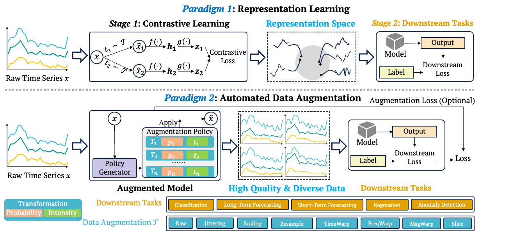

Representation Learning vs. AutoDA

Existing applications of data augmentation in time series analysis can be broadly categorized into two paradigms: representation learning and automated data augmentation (AutoDA). In the representation learning paradigm, augmentations are primarily used to construct positive and negative views for contrastive learning. An encoder is first optimized to learn task-agnostic representations by enforcing invariance across augmented views. The learned representations are then transferred to downstream tasks through a separate fine-tuning stage. While effective for general-purpose representation learning, this two-stage pipeline implicitly assumes that downstream models can fully adapt to the pretrained representations, which may not hold for time series models whose inductive biases are closely tied to temporal dynamics and task-specific objectives. In contrast, AutoDA follows a one-stage, task-aware optimization scheme, where augmentation strategies are jointly optimized with the downstream task. Instead of relying on fixed or manually designed transformations, AutoDA dynamically adjusts both the selection probability and transformation intensity during training. This joint optimization produces high-quality and diverse augmented samples that are explicitly tailored to the downstream objective, directly enhancing model performance across tasks such as classification, forecasting, regression, and anomaly detection.